Better genetics.
Stronger roots.
Premium Italian vegetable seeds from Panora and TSI Italia for growers in Saudi Arabia, the UAE, Qatar, Kuwait, Bahrain and Oman, with agronomy support from seed to sale.
From the breeder's trial field to your greenhouse
MAD OceanConnect is a specialised seed trading and agricultural consulting company. We work with Panora Seeds, which brings together ISI Sementi and Top Seeds International (TSI Italia), and match their varieties to local climate, growing systems and market demand.
Seed trading
Import, distribution and representation of premium vegetable genetics across the GCC.
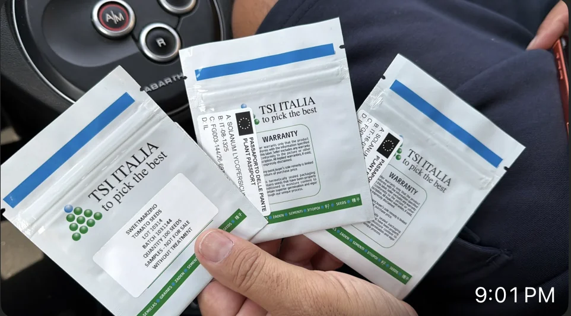
Agronomy support
Variety selection, production planning and technical support through the season.
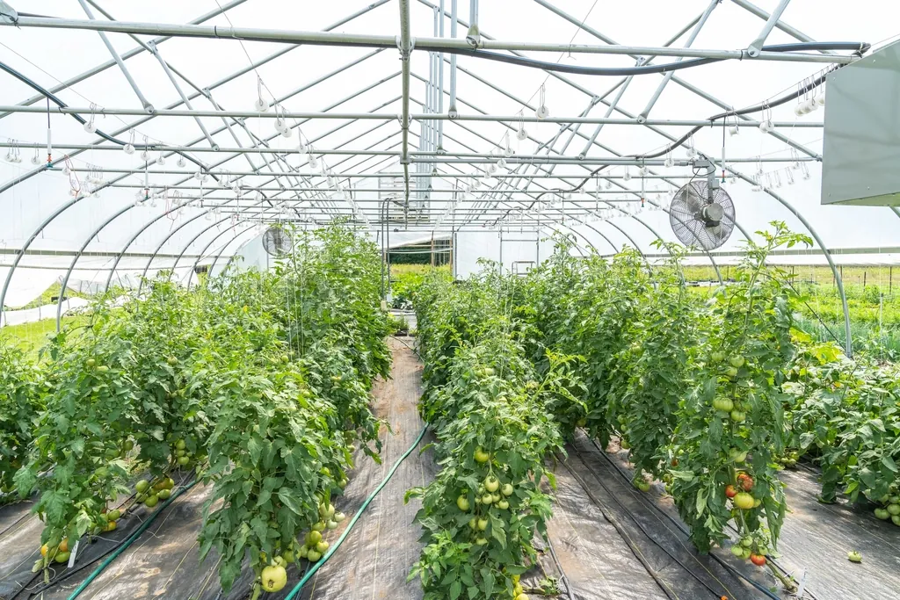
Market connection
Linking breeders, growers, greenhouse technology and premium produce buyers.
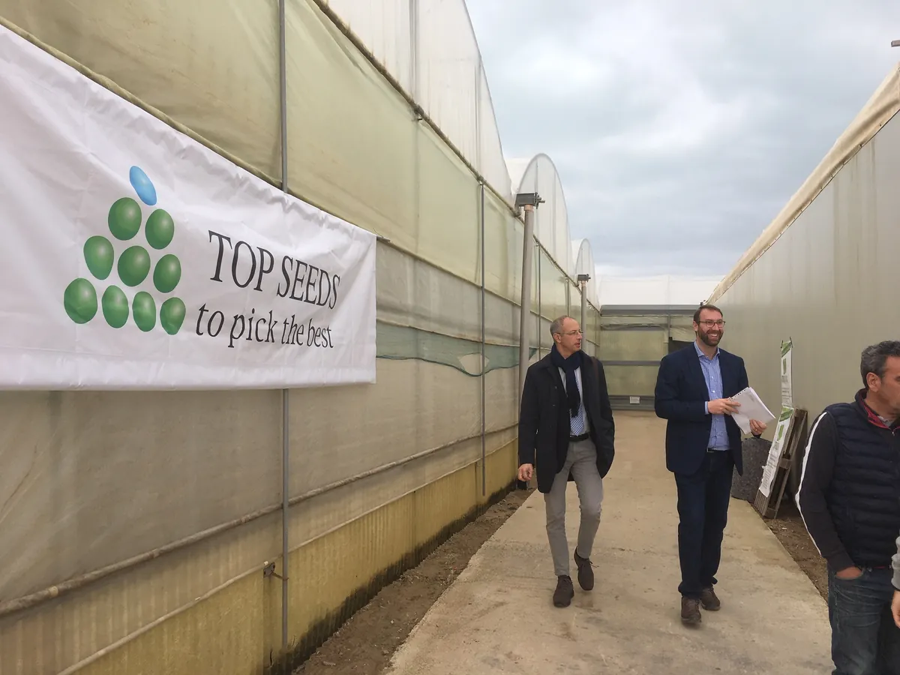
Greenhouse or open field
Every variety is tagged with the system it is bred for, so you only see what fits your farm.
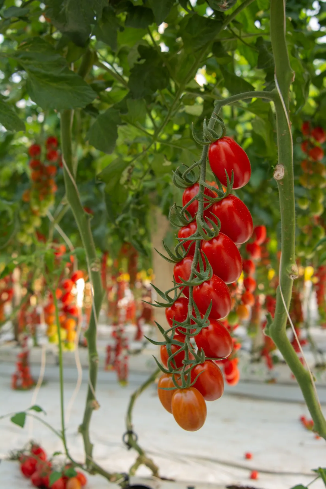
Greenhouse & tunnel
Indeterminate tomatoes, rootstocks, peppers, cucumbers and basil.
Shop greenhouse seeds →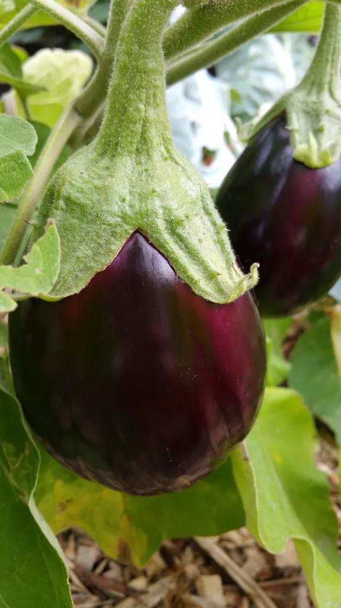
Open field
Eggplant, mini watermelon and Zeta oxheart, plus field crops on request.
Shop open-field seeds →Choose your variety, add it to the cart
Varieties we supply from the Panora / TSI Italia range. Pick a pack size, add to your cart, then send one request for a quotation.
Open-field vegetables on request
More crops from the wider Panora range. Ask us which varieties suit your season.
Bred to stand up to ToBRFV
Tomato brown rugose fruit virus can wipe out a greenhouse. These varieties carry intermediate resistance to it, and to tomato yellow leaf curl virus (TYLCV).
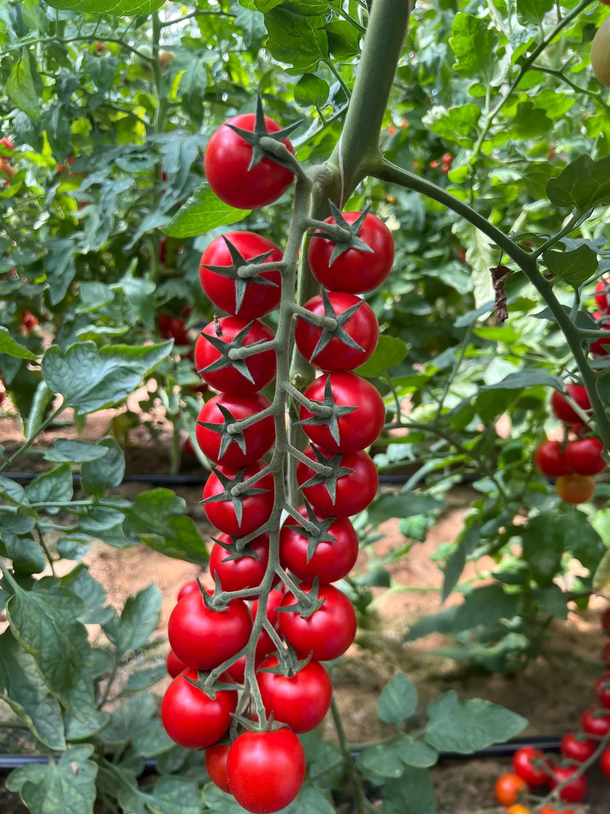
Gaspanello
Cherry tomato on the vine that keeps setting fruit in high heat. Trusses of 14–16 fruits, 18–25 g each, ripening about 60 days after summer transplanting.
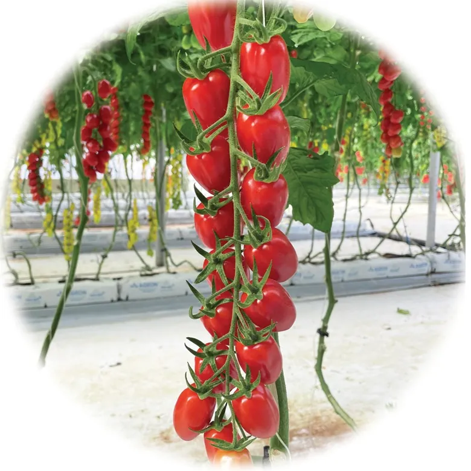
Top 2102 F1
Red datterino, close to Fanello with stronger ToBRFV resistance.
Fanello
Datterino for truss or loose harvest, up to 11° Brix.
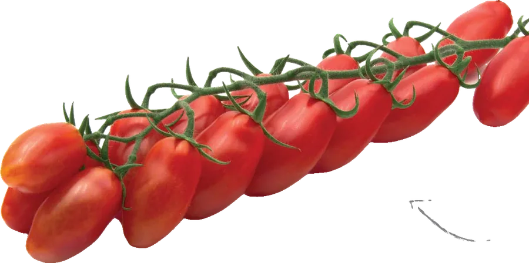
Sweetmarzino F1
Mini San Marzano with candy-sweet flavour and very high Brix.
What one packet of Top 2102 becomes
Figures from the Top 2102 breeder leaflet, for spring–summer transplanting.
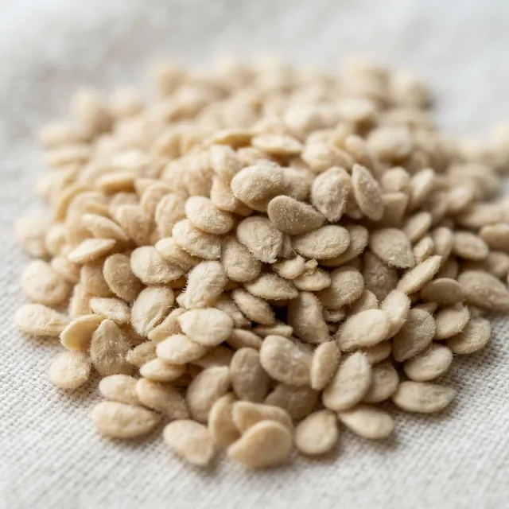
Sow in the nursery
Hybrid F1 seed from a sealed TSI Italia packet.
Transplant
Grafted on Interceptor rootstock, which also resists ToBRFV.
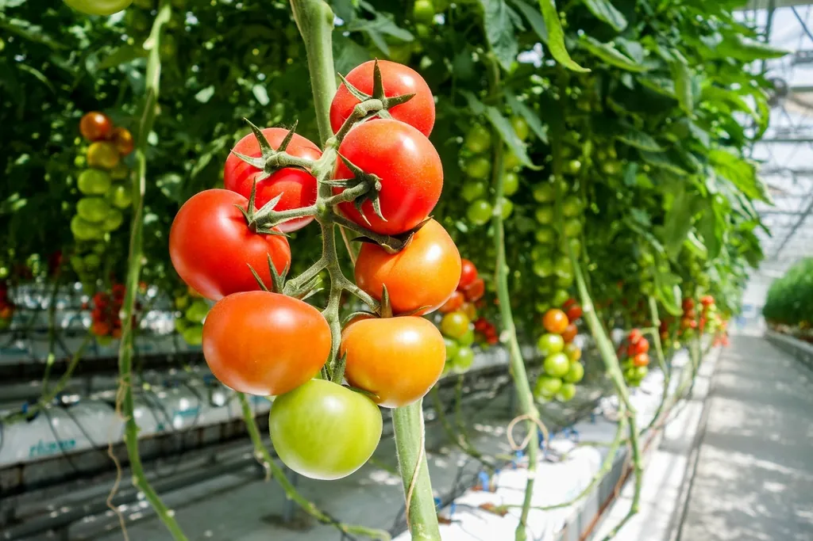
Herringbone trusses
14–18 fruits per truss that ripen quickly and evenly.
First harvest
Bright red 20–28 g datterini with good firmness and shelf life.
Tomato seeds
Lot 10314 · Batch 1031144
Quantity 100 seeds
Without treatment
Seeds are sold by seed count
Professional hybrid seed is packed and priced per number of seeds, not by weight. Choose a pack size on each variety; we confirm final pack sizes, prices and availability in your quotation.
Pick the pack size and how many packs you need.
Tell us your country, area and planting date.
Our team replies with prices, stock and shipping to your farm.
World-class genetics
Panora Seeds is the Italian vegetable breeder formed by ISI Sementi and Top Seeds International (TSI Italia). Its varieties are bred for yield, quality, resistance and market appeal.
Local knowledge. Global genetics.
Let's grow a brighter tomorrow together
Tell us your crop, location and growing system. We'll recommend the right variety and send prices and availability.
- 1Share your cropCrop, area and season
- 2Get a recommendationThe right variety for your conditions
- 3Receive your quotePrices and availability
All seeds
Filter by crop, growing system or disease resistance. Every card shows the vegetable, its seed and the pack sizes you can order.
Beyond the seed
The right variety is half the harvest. Our agronomists and partner experts help you choose it, plan it and grow it well.
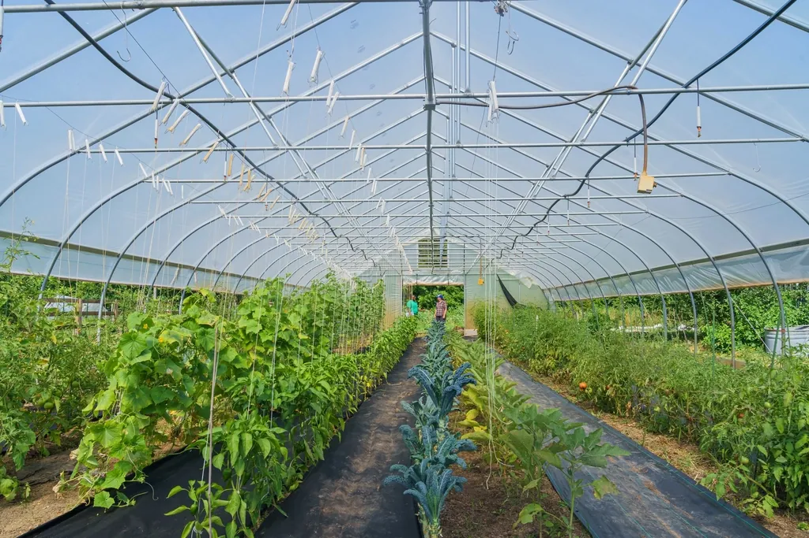
The right variety for your season, region and buyer.
Transplant and harvest planning for GCC conditions.
On-farm help with our breeder partners' experts.
Side-by-side trials before you scale up.
Greenhouse, irrigation and hydroponic suppliers.
What premium buyers want, and how to reach them.
From catalogue to field
Temperature, season, humidity and stress conditions.
Greenhouse, tunnel, hydroponic or open field.
Vigour, maturity, fruit type and resistance package.
Taste, size, colour, shelf life and buyer specification.
Yield potential, crop cycle and commercial value.
Tomato rootstocks
From the TSI Italia grafting guide. Lower vigour suits short cycles; higher vigour suits long and very long cycles.
Resistance codes explained
HR (high resistance) strongly limits the disease under normal pressure. IR (intermediate resistance) limits it, but some symptoms can show under heavy pressure.
| Code | Disease or pest | Type |
|---|
Better genetics. Better agriculture. A stronger GCC.
MAD OceanConnect is a specialised seed trading and agricultural consulting company, connecting world-class vegetable genetics, knowledge and technology to growers and markets across the GCC.
TSI Italia open day at a trial greenhouse in Italy.
Separate companies. Clear roles.
MAD OceanConnect
Seeds & agriculture- Seed trading and distribution
- GCC representation
- Agricultural consulting
- Variety and crop strategy
- Technology and supplier connections
- Commercial and market development
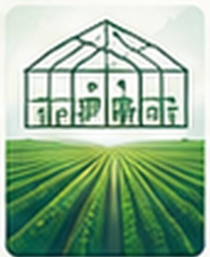
Trio Agritech
Farming & production- Greenhouse farming
- Open-field farming
- Hydroponic and protected agriculture
- Cultivation operations
- Farm workforce and production
- Partnerships on Sharjah land
Sustainable agriculture for a healthier tomorrow
Request a quotation
Check your seeds, tell us where you grow, and send one request. We reply with prices, stock and delivery.